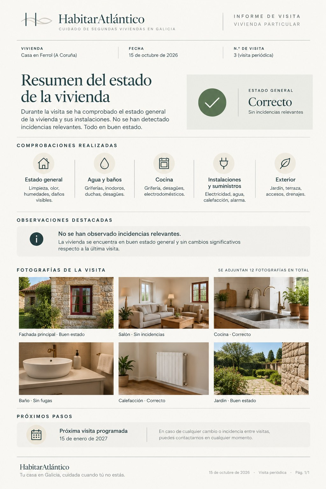

Visitas periódicas
Ventilación, revisión visual y comprobación del estado general de la vivienda.
CUIDAMOS LO QUE IMPORTA
Supervisión, cuidado y tranquilidad para viviendas que no siempre pueden estar atendidas.
UNA PRESENCIA
CUANDO NO ESTÁS
Una vivienda cerrada puede esconder pequeñas incidencias que, con el tiempo, se convierten en grandes problemas. HabitarAtlántico ofrece una presencia de confianza, visitas periódicas y seguimiento para que tu casa esté cuidada, incluso cuando estás lejos.
Así cuidamos tu vivienda ↗02 / SERVICIOS
Un servicio cercano, metódico y adaptado a cada vivienda.
Ventilación, revisión visual y comprobación del estado general de la vivienda.
Detectamos señales de humedad, incidencias o cambios que requieren atención.
Recepción de técnicos, seguimiento de reparaciones y apoyo en gestiones.
Todo listo para tu llegada: comprobaciones, suministros y pequeños detalles.
03 / EL MÉTODO
Definimos necesidades, frecuencia y puntos de atención.
Seguimos una pauta de comprobación adaptada a tu casa.
Te informamos con fotografías y observaciones de cada visita.
04 / SEGUIMIENTO
Cada visita queda documentada con un informe visual: comprobaciones realizadas, observaciones y, si procede, incidencias o recomendaciones.
Conocer el servicio ↗
05 / PLANES
Todos los planes incluyen informe de visita y comunicación directa.
BÁSICO
Una revisión al mes
ESTÁNDAR
Seguimiento regular
PREMIUM
Mayor presencia
Servicios adicionales y necesidades específicas, disponibles bajo consulta.
06 / CONFIANZA
HabitarAtlántico nace para ofrecer algo más que una visita: una presencia responsable, comunicación transparente y atención a los detalles que protegen una vivienda.
Trabajamos con un seguro de responsabilidad civil adecuado a nuestra actividad, como garantía adicional de profesionalidad y responsabilidad en el cuidado de tu vivienda.
07 / CONTACTO
Cuéntanos qué necesitas. Estudiaremos cómo podemos ayudarte.
Escribir un email ↗